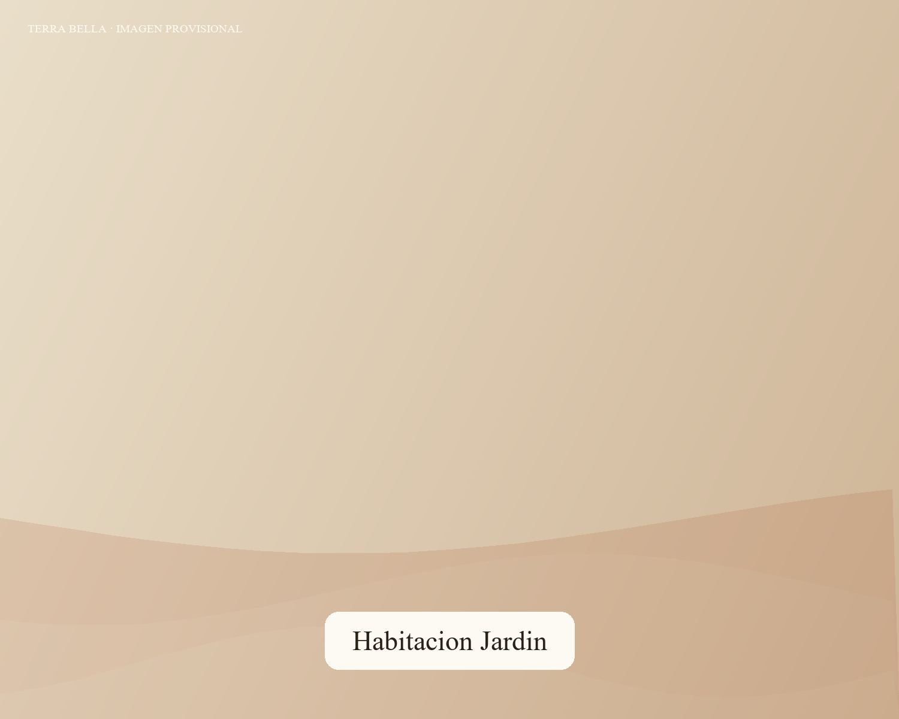
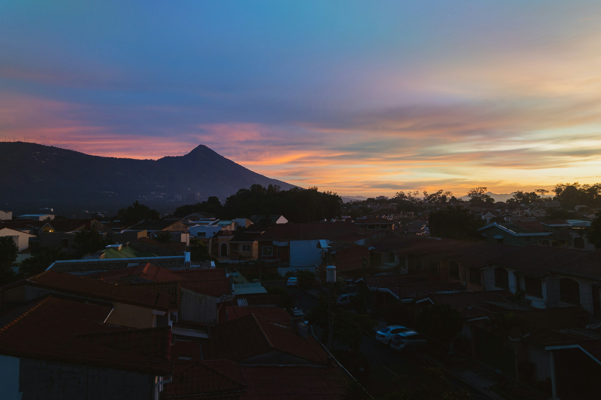
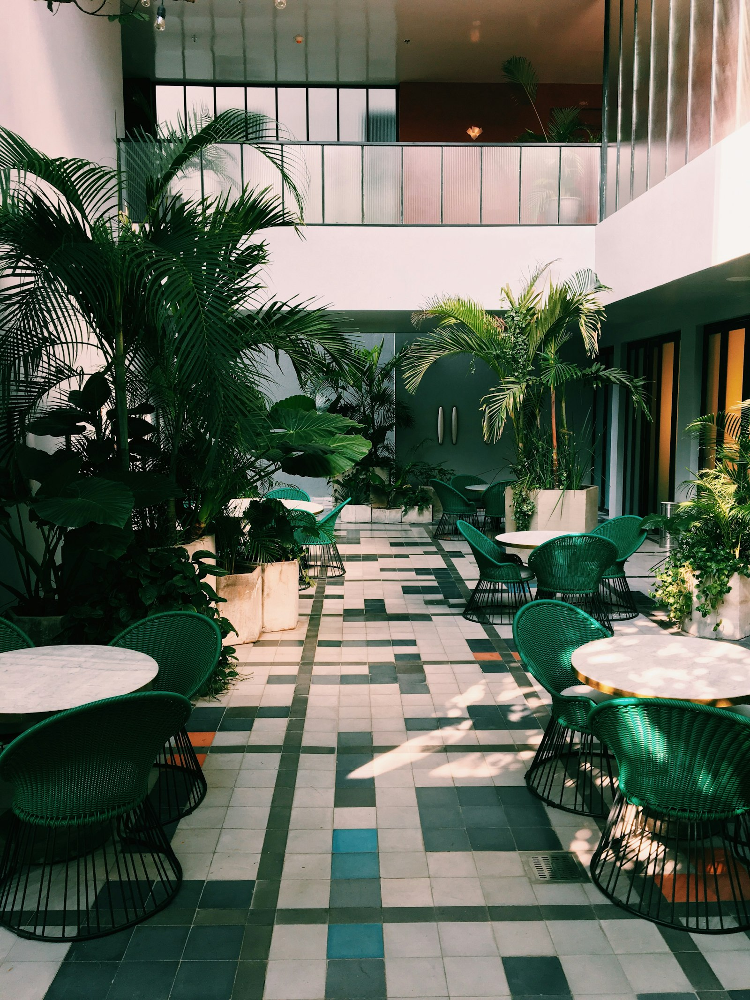
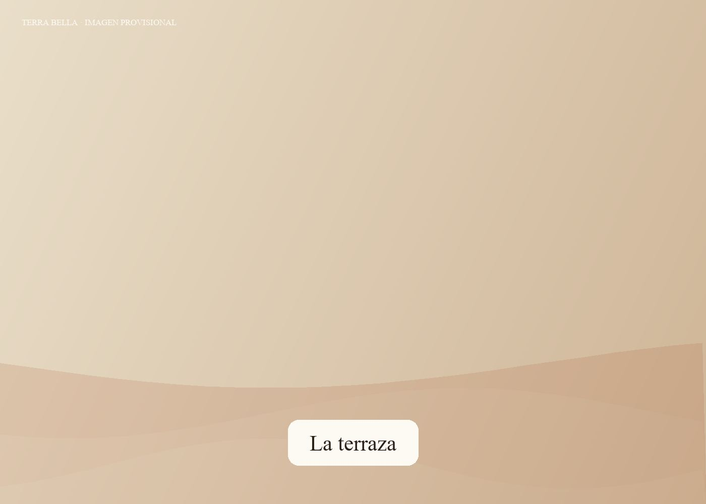
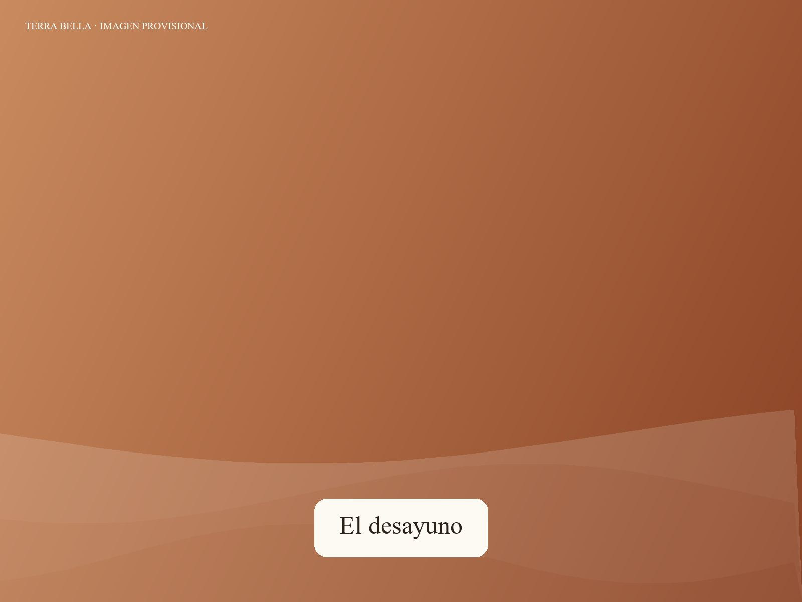
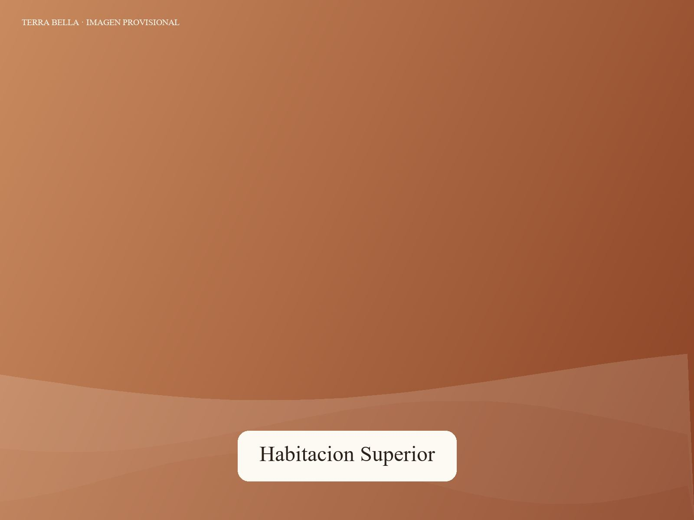
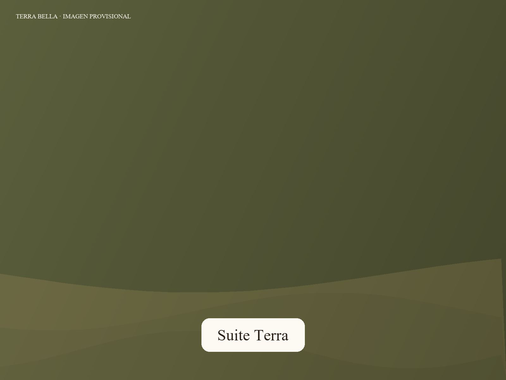

Habitación Jardín
Desde $84 / noche
La más tranquila de la casa: ventana al jardín y desayuno cocinado al momento.
Ver detalle
Trece habitaciones alrededor de un jardín, en el barrio de los museos de San Salvador. Desayuno cocinado al momento, café salvadoreño y silencio a diez minutos de todo.

El jardínTerra Bella ocupa una casa de San Benito adaptada con cuidado: pisos originales, plantas de la región y un jardín interior que ordena la vida del hotel. Se llega como huésped y se sale conociendo al equipo por su nombre.
Trece habitaciones, un jardín, un comedor donde el desayuno se prepara al momento y un bar de barrio. Lo justo para que nada se sienta industrial.

El punto de encuentro de la casa, para el desayuno o una copa al final del día.

Fruta de temporada, pan del día y café de origen salvadoreño, cocinado al momento.

Museos, galerías y restaurantes de San Benito, a pie desde la puerta.
Trece habitaciones alrededor del jardín, todas distintas. Ropa de cama de algodón, aire acondicionado silencioso, Wi-Fi de fibra y desayuno incluido en la tarifa flexible. Precios de referencia por noche, sin impuestos.

Desde $84 / noche
La más tranquila de la casa: ventana al jardín y desayuno cocinado al momento.
Ver detalle
Desde $99 / noche
En el nivel alto, con más luz, cama King y un sillón para leer al final del día.
Ver detalle
Desde $165 / noche
Dormitorio y sala separados, con terraza privada abierta al jardín.
Ver detalleCocinado al momento: huevos al gusto, casamiento, plátano, fruta de temporada y pan horneado ese día.
Una carta corta y de temporada para las noches en que no quieres salir.
Cócteles con destilados de la región y vinos por copa, en el jardín o bajo techo.
 A menos de dos horas
A menos de dos horas
Playas de surf por la mañana, un volcán y un lago de cráter por la tarde, pueblos de café al día siguiente. Desde San Benito, todo queda a menos de dos horas.
Jardín, terraza, comedor y habitaciones. Toca cualquier imagen para verla en grande.
Lo que obtienes al reservar en este sitio y no en una agencia de viajes.
★★★★★"La ubicación es perfecta: se camina a los museos y a los mejores restaurantes. El desayuno, espectacular."
Viaje de trabajo · Ciudad de Panamá
★★★★★"Un oasis silencioso. El jardín por la mañana con un café es lo que recordamos del viaje."
Fin de semana · San Salvador
★★★★★"El equipo nos ayudó con todo: taxis, reservas, la ruta de las flores. Como quedarte con amigos."
Primera visita a El Salvador
Check-in a partir de las 3:00 p. m. y check-out hasta las 12:00 m. d. Si llegas antes, guardamos tu equipaje sin problema y puedes usar el jardín.
Sí, en la tarifa flexible y en la mayoría de paquetes. Se cocina al momento entre las 6:30 y las 10:30 en el comedor del jardín.
Sí, estacionamiento privado dentro de la propiedad sin costo, sujeto al espacio disponible. Avísanos si llegas en auto.
Sí. El MUNA está a 3 minutos a pie y el Museo de Arte (MARTE) a 6. La Zona Rosa y sus restaurantes quedan a 10 minutos caminando.
Aceptamos perros de hasta 12 kg en dos habitaciones designadas, con aviso previo y un cargo de limpieza.
Sí. La recepción coordina traslados al aeropuerto, guías y excursiones a la Ruta de las Flores, los volcanes y la costa. Pídelo al reservar o a tu llegada.
Mejor tarifa garantizada, desayuno incluido y un equipo que te atiende por tu nombre.
Comprobar disponibilidad